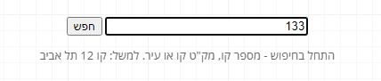
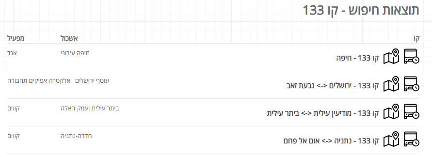
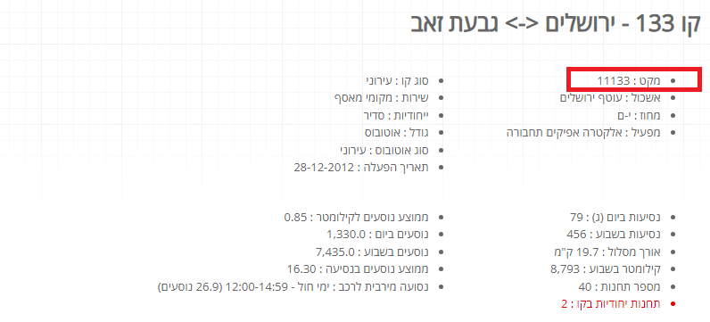

12. Appendix A: How to find the catalog number (מקט) of the bus line at the http://markav.net¶
Open http://markav.net.
In the search box enter the number of a bus route and, optinally, the city, click חפש. For example, if you enter 133.
You will get the list of all bus lines in Israel which number is 133.
Select the bus line you are searching for.
You will see the details of this line, including its catalog number in the field מקט.
